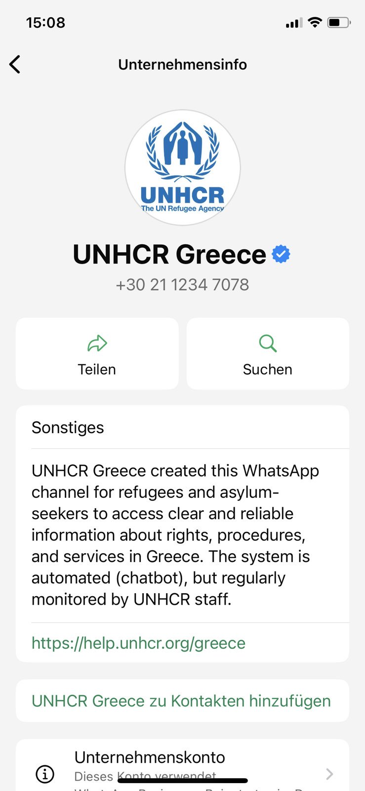
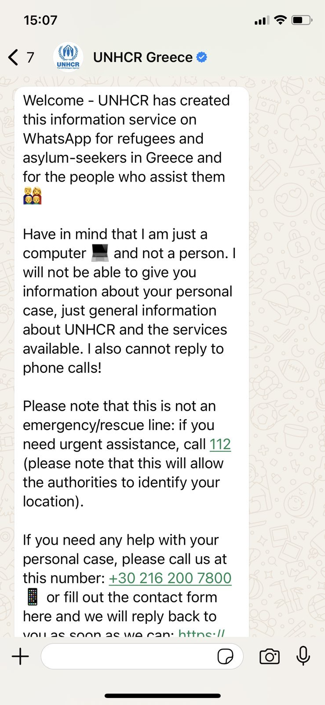
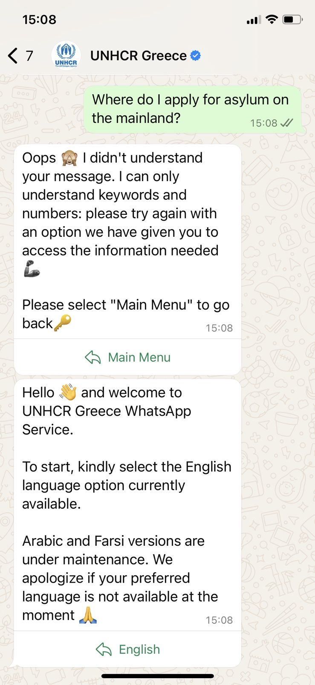
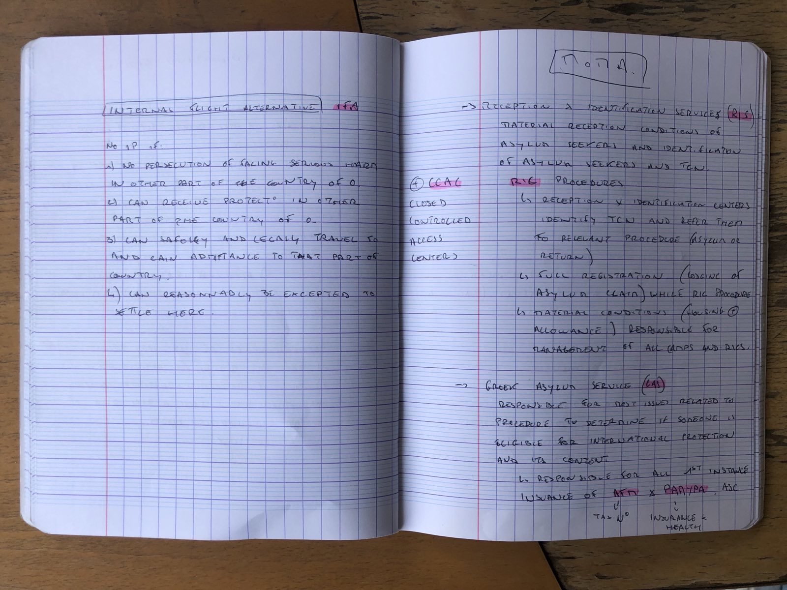
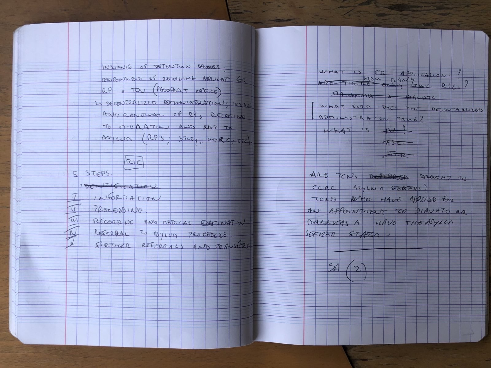
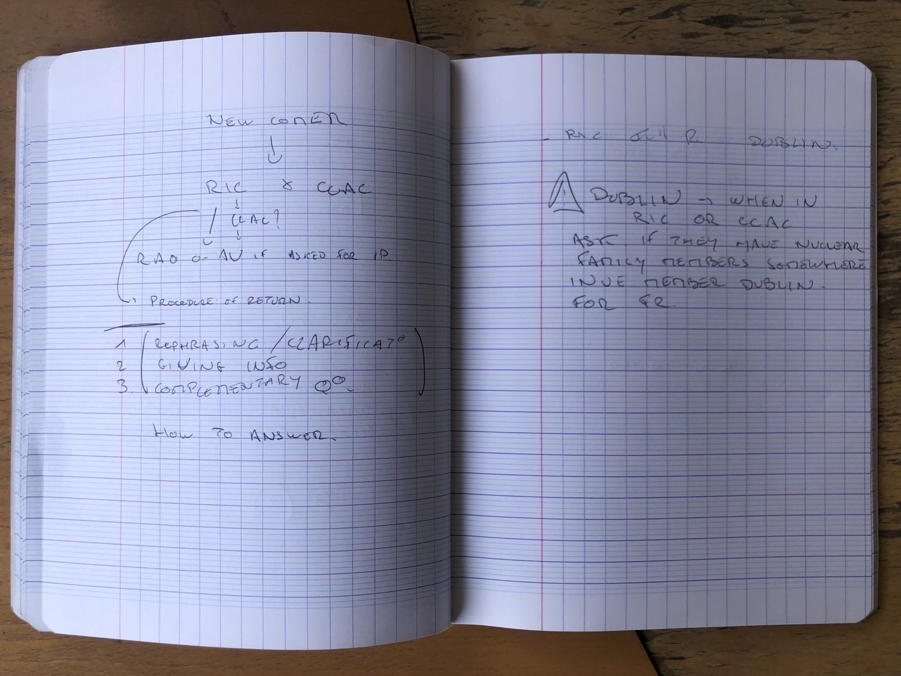

Research Questions

Rapid 3D Modeling for Human Rights Monitoring using Gaußian Splatting
First person documentation of human rights crimes are typically fragmented, blurry, and unstable.
This project aims to explore how this fragmentary material can be reconstructed and archived using Gaußian splatting, a 3D
modeling technique that allows for the rapid reconstruction of 3D models from 2D images. Gaußian splatting can account for
sometimes blurry, low resolution, and fragmented images. The aim of this project is to develop a system that can rapidly transform
first person documentation and ephemera into usable spatial models that could be used as evidence in advocacy and legal contexts.
Research Objectives
==>To develop a system for converting video footage into spatial 3D models using Gaußian Splatting.
==>To explore what the resulting ephemera can be used for in terms of documentation in legal contexts and advocacy.
==>To examine how these models might imply a different understanding of evidence as it pertains to first person documentation.

Expected Result
==>A working prototype for rapid scene modeling.
==> A critical framework for ethical use of neural 3D reconstructions in evidence contexts
==> A speculative design interface or exhibit that presses on the tension between visual clarity and evidentiary ambiguity: questioning the role of the "burden of proof" in human rights crime research.
Reference
Kerbl, B. et al. (2023). 3D Gaussian Splatting for Real-Time Radiance Field Rendering
Legal Comprehension Tools, Using Chatbot Intervention
Access to legal aid for asylum seekers in Greece has been increasingly restricted
since misappropriation of funds,
criminalization of NGOs,
and funding cuts of USAid.
The United Nations High Commissioner for Refugees (UNHCR) recently introduced a legal help chatbot.
The tool shows the potential to utilizing AI technology to assist asylum seekers in an
increasingly sparse aid environment: without access to in-person assistance, the tool could reach very
far in terms of access. It also poses critical security risks: information shared on the hotline is stored
and personal information could be used later in criminalization for irregular status in Greece or within asylum
applications. It leaves its users at risk of surveillance and state violence, especially in the currecnt context
where irregular status in Greece can result in detention for up to 36 months.
This research proposes a modification of the chatbot model that priotitizes legal comprehension for the sake of self-
advocacy. Designing the tool as a learning platform- not as a substitute for legal aid, but as a grounds for communicating
in simple and accessible terms the inaccessible legal system that asylum seekers find themselves beholden to. The barriers
that asylum seekers face are many: dense beaucratic processes in a foreign language and an accomodation system
that is fraught with inconsistency. Drawing from direct experience as a legal caseworker at an NGO hotline, and observing
how legal learning happens through the individual training of new caseworkers, the project will explore how a conversational interface
could prioritize clarity, security, and modification for cultural nuances. For example, in Syrian Arabic, the german term "ausweis" is used
to refer to an Asylum Seeker's Card in Greece. The emphasis remains on explaining rights in an accessible, translatable language that supports
empowerment of individuals to advocate for themselves in a system where conditions directly in offense of international human rights law go unchallenged.






Pictured above: first conversations with the UNHCR chatbot. Arabic and Farsi languages currently unavailable.
Also pictured: sample of notes from a new legal caseworker from briefings on Greek Asylum Law.
← Back to Home